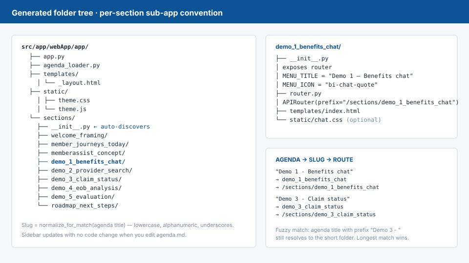
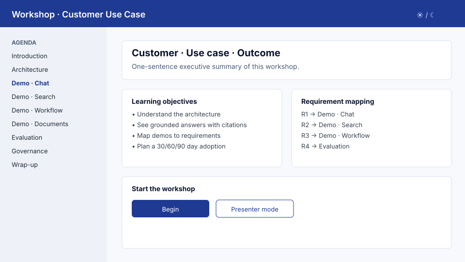
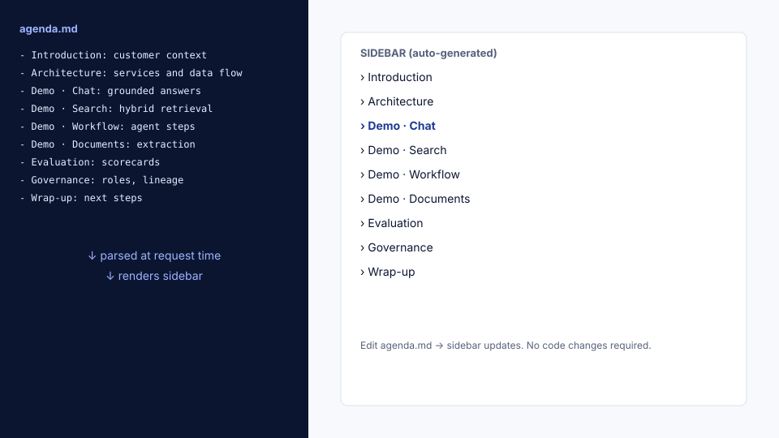

6. Generate the Contoso Outdoor web app¶
Goal¶
Turn the approved /plan into a working FastAPI/Jinja2/Docker Contoso Outdoor
Search app skeleton — the same shape rendered by the
live demo.
Why it matters¶
This is where the time savings show up. With a good SKILL + agenda + plan, you get a runnable, agenda-driven app in one Copilot turn instead of days of scaffolding.
Inputs¶
- Approved plan from Module 5.
SKILL.mdandagenda.mdin the workspace.
Step-by-step¶
- In Copilot Chat, send the implementation prompt below.
- Review the generated structure against the SKILL.
- Run the app locally (
uvicornordocker compose up --build). - Confirm the sidebar reflects every agenda item.
- Commit the skeleton before adding content.
Copilot prompt¶
Implement the first functional version of the workshop web app based on the
approved plan and SKILL.md.
Start with:
- Project structure
- FastAPI app (app.py)
- agenda.md loader
- Dynamic sidebar from agenda.md
- Home page
- One section route per agenda item with a base template
- CSS design system (light/dark, persisted via localStorage)
- Vanilla JavaScript (no framework)
- Mock interactive demo placeholders
- README with run instructions
- Dockerfile
- docker-compose.yml
- example.env (no real secrets)
Do not add real secrets. Use example.env only.
Expected output¶
A runnable app with:
- Working sidebar generated from
agenda.md. - One stub page per agenda item.
- Light/dark theme toggle.
docker compose up --buildworks on a clean machine.
Expected folder structure (per-section sub-app convention)¶
The reference architecture uses one folder per agenda item under
sections/. Each folder is a Python package that exposes its own
router, MENU_TITLE, and MENU_ICON. The root app auto-discovers them.
src/app/webApp/app/
├── app.py # ASGI entrypoint, menu middleware, /healthz
├── agenda_loader.py # parses agenda.md under heading anchor
├── templates/
│ └── _layout.html # shared chrome with dynamic sidebar
├── static/
│ ├── theme.css
│ └── theme.js
└── sections/
├── __init__.py # auto-discovery via pkgutil.iter_modules
├── coverage_lookup/
│ ├── __init__.py # exposes router, MENU_TITLE, MENU_ICON
│ ├── router.py # APIRouter(prefix="/sections/<slug>")
│ ├── templates/
│ │ └── index.html
│ └── static/ # optional, per-section assets
├── claim_status/
├── provider_search/
├── eob_document_extraction/
├── evaluation_scorecard/
└── roadmap_next_steps/

Reference agenda_loader.py (excerpt)¶
import re
from pathlib import Path
from typing import Iterator
HEADING = "### Data to be used by SKILL.md to create the Workshop App"
BULLET_RE = re.compile(r"^\s*-\s+(?P<title>[^:]+):\s*(?P<desc>.+?)\s*$")
def normalize_for_match(s: str) -> str:
return re.sub(r"[^a-z0-9]+", "_", s.lower()).strip("_")
def load(agenda_path: Path) -> Iterator[dict]:
in_section = False
for line in agenda_path.read_text(encoding="utf-8").splitlines():
if line.strip() == HEADING:
in_section = True
continue
if in_section and line.startswith("###"):
break
if not in_section:
continue
m = BULLET_RE.match(line)
if m:
title = m["title"].strip()
yield {
"title": title,
"slug": normalize_for_match(title),
"description": m["desc"].strip(),
}
Reference sections/__init__.py (auto-discovery)¶
import importlib
import pkgutil
from types import ModuleType
from typing import Iterator
def discover() -> Iterator[ModuleType]:
"""Yield each section sub-package that exposes a `router`."""
for info in pkgutil.iter_modules(__path__):
if info.name.startswith("_"):
continue
mod = importlib.import_module(f"{__name__}.{info.name}")
if hasattr(mod, "router"):
yield mod
Reference per-section __init__.py¶
from .router import router
MENU_TITLE = "Coverage Lookup"
MENU_ICON = "fa-solid fa-comments"
SECTION = "coverage_lookup"
Reference app.py skeleton¶
from pathlib import Path
from fastapi import FastAPI, Request
from fastapi.staticfiles import StaticFiles
from fastapi.templating import Jinja2Templates
from . import sections
from .agenda_loader import load as load_agenda
BASE = Path(__file__).parent
templates = Jinja2Templates(directory=str(BASE / "templates"))
app = FastAPI(title="Workshop")
app.mount("/static", StaticFiles(directory=str(BASE / "static")), name="static")
AGENDA = list(load_agenda(BASE.parent.parent.parent / "agenda.md"))
SECTIONS = list(sections.discover())
# Fuzzy match agenda title -> section module via normalized substring
def _resolve(title: str):
norm = title.lower().replace(" ", "")
best, best_len = None, 0
for s in SECTIONS:
slug = s.SECTION
if slug in norm or norm in slug:
if len(slug) > best_len:
best, best_len = s, len(slug)
return best
MENU = [{"title": item["title"],
"url": f"/sections/{_resolve(item['title']).SECTION}" if _resolve(item['title']) else "#",
"icon": (_resolve(item['title']) or type("X", (), {"MENU_ICON": "bi-square"})).MENU_ICON}
for item in AGENDA]
for s in SECTIONS:
app.include_router(s.router)
@app.middleware("http")
async def inject_menu(request: Request, call_next):
request.state.menu = MENU
return await call_next(request)
@app.get("/healthz")
def healthz():
return {
"status": "ok",
"agenda_items": len(AGENDA),
"sections_loaded": len(SECTIONS),
}
@app.get("/")
def home(request: Request):
return templates.TemplateResponse("home.html", {"request": request})
Expected routes¶
| Route | Purpose |
|---|---|
GET / |
Home — workshop overview, audience, requirements. |
GET /sections/{slug} |
One page per agenda.md item. |
GET /api/demo/chat |
Returns mock chat response JSON. |
GET /api/demo/search |
Returns mock ranked search results. |
GET /api/demo/workflow |
Returns mock workflow timeline. |
GET /api/demo/document |
Returns mock document extraction. |
GET /api/demo/evaluation |
Returns mock scorecard. |
GET /healthz |
Liveness probe. |
Expected screens¶



Push-back prompts¶
When Copilot misfires, send one of these:
If Copilot generates static pages instead of agenda-driven
The sidebar and section list must be generated at request time by reading agenda.md.
Refactor to add an `agenda_loader` module that returns a list of {slug, title, description}
and remove all hard-coded navigation entries.
If Copilot hard-codes the sidebar
Replace the hard-coded sidebar with a Jinja2 partial that iterates over the items returned by `agenda_loader.load()`.
The partial must be included by the base template only.
If Copilot ships real Azure SDK calls in v1
Remove all real Azure SDK calls. v1 must use mock JSON in data/. Add a comment in each demo handler showing the extension point where the real call will go later.
Generation tips
- Generate one section first, then fan out. Verify the per-section package convention works end-to-end (slug, router, templates, /healthz reports it loaded) before letting Copilot write the other 8.
- >1500 LOC in one turn → force a split. Copilot will silently truncate. Ask for one file at a time and verify each compiles.
- Always read the generated
requirements.txtbeforepip install. Copilot loves to addazure-*packages "for later" — strip them. - Slug collisions are silent killers. If two agenda titles normalize
to the same slug, the second section overwrites the first in the menu.
Add a hard error in
agenda_loaderfor duplicates.
Advanced pattern — multi-microservice option¶
When to split the single FastAPI app into multiple services:
| Stay single-service | Split into microservices |
|---|---|
| Workshop is a one-shot demo. | Engagement evolves into a pilot. |
| All demos use mock data. | Real Foundry agent + real AI Search show up. |
| Local-only Docker Compose. | Customer wants Container Apps / App Service. |
| One CSA owns the code. | Several teams will own per-domain services. |
The reference repo uses these ports when split:
| Service | Port | Role |
|---|---|---|
webApp |
8080 | The workshop UI you've been building. |
agentOperations |
8081 | Wraps Foundry agent calls. |
cosmosOperations |
8082 | Wraps document/state persistence. |
searchOperations |
8083 | Wraps Azure AI Search. |
Inter-service calls authenticate with X-API-Key and resolve over
host.docker.internal so the same compose file works on Mac/Windows
and a developer doesn't need a service mesh:
from fastapi import Header, HTTPException
from fastapi.security import APIKeyHeader
import os, secrets
api_key_header = APIKeyHeader(name="X-API-Key", auto_error=False)
EXPECTED = os.environ.get("INTERNAL_API_KEY", "")
def require_api_key(key: str = Depends(api_key_header)):
if not EXPECTED or not key or not secrets.compare_digest(key, EXPECTED):
raise HTTPException(status_code=401)
Keep this off the critical path for v1. Add it the day you replace the first mock with a real call.
Validation checklist¶
- App starts with no errors.
- Sidebar matches
agenda.mdexactly. - Every section route returns 200.
- Theme toggle persists across reloads.
- No secrets in the repo.
Common issues¶
Sidebar drifts from agenda
The agenda parser is hard-coded. Refactor it to read agenda.md at
request time (or app startup with a reload endpoint in dev).
Next step¶
Continue to 7. Run locally with Docker Compose.